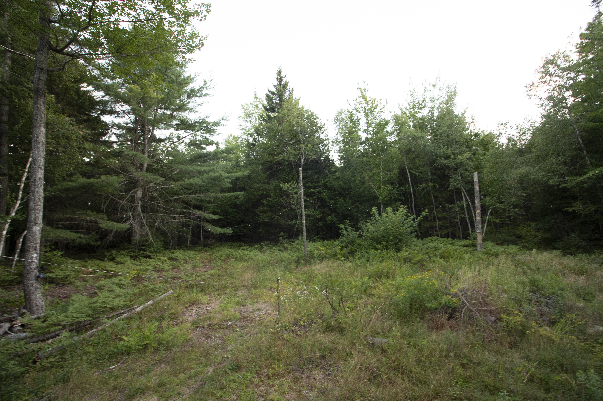

THE VISION / 01-03
PRESERVE THE LAND.
BUILD INTENTIONALLY.
Three views of The Barrens, moving from the existing landscape toward a place shaped for long stays, open air, and everyday movement.
01 / A NEW LANDSCAPE
Wild blueberry fields become the first room.
The vision begins with the barren itself. The architecture is placed lightly, allowing the long view, changing light, and character of the land to remain present.


02 / MOVEMENT
Trails give the day a longer shape.
Bike routes, walking paths, and outdoor spaces connect the cabins to the surrounding woods without turning the experience into a schedule.
03 / MATERIALITY
Simple materials make room for quiet.
Warm surfaces and restrained forms bring the feeling of the landscape indoors, creating a retreat that feels tactile, useful, and made to last.


THE BARRENS